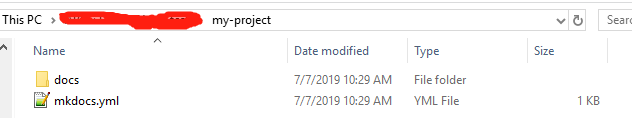
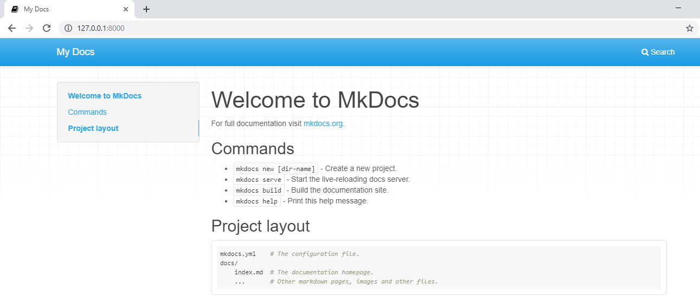
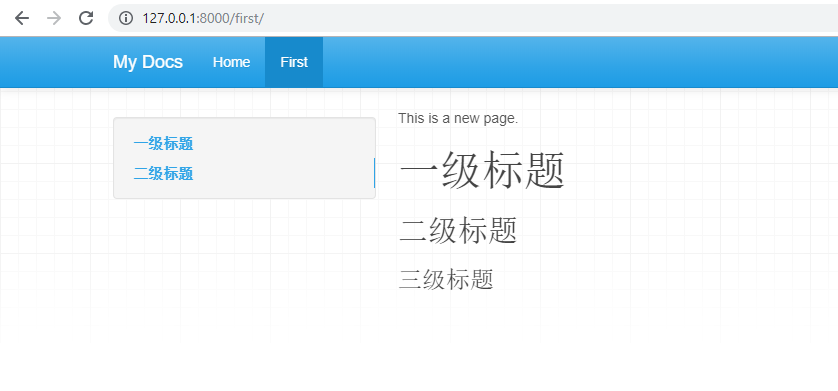
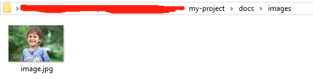
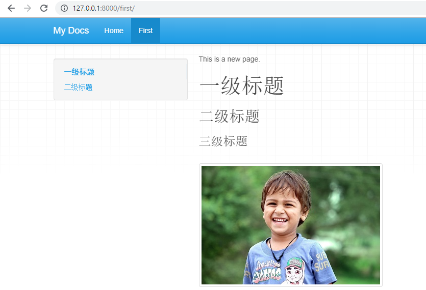

MkDocs - 初识#
简单的说MKDocs就是一个可以将Markdown文件转换成HTML网页文件的Python程序。
本期小编将带领你从零到一创建一个属于你自己的Wiki知识管理系统。
1. 写作工具#
工欲善其事必先利其器，推荐大家使用VSCode，VSCode对Markdown的支持十分友好，支持工作空间、Markdown预览和命令行终端等功能，是一款写作利器。
2. 安装MkDocs#
使用pip安装 mkdocs 软件包
pip install mkdocs
检测 MkDocs 是否安装成功
$ mkdocs -V
mkdocs, version 1.0.4 from \path\to\python-site-packages\mkdocs(Python3.7)
3.新建一个WiKi#
mkdocs new my-project
cd my-project
现在你的WiKi看上去将会是这个样子:

-
docs文件夹下存放的就是自己写的Markdown文章，系统默认会生成一个index.md文件 -
mkdocs.yml是wiki网站的配置文件（主题、目录、语言等）
4.预览WiKi#
首先启动MkDocs服务，相当于一个Web服务器。
$ mkdocs serve
INFO - Building documentation...
INFO - Cleaning site directory
[I 191214 10:17:31 server:296] Serving on http://127.0.0.1:8000
[I 191214 10:17:31 handlers:62] Start watching changes
[I 191214 10:17:31 handlers:64] Start detecting changes
然后打开浏览器输入127.0.0.1:8000访问WiKi站点。
如果以上步骤都执行成功，你将看到如下界面：

至此，一个wiki系统已经搭建完成，下面我们来学习一下如何向wiki系统中添加新的内容吧!
5.添加新内容#
5.1 添加新的文字内容#
首先在 my-project/docs 文件夹下面创建 first.md 文件，并使用你喜欢的markdown编辑器写入内容：
This is a new page.
# 一级标题
## 二级标题
### 三级标题
然后编辑 my-project/mkdocs.yml 文件（WiKi网站配置文件），在末尾添加以下内容：
nav:
- Home: index.md
- First: first.md
保存以上编辑的文件，并刷新预览页面，你将看到如下界面：

5.2 添加新的图片内容#
建立 my-project/docs/images 文件夹，并将 image.jpg 放入此文件夹。

然后在 my-project/docs/first.md 文件中插入该图片：
This is a new page.
# 一级标题
## 二级标题
### 三级标题

保存以上编辑文件，然后刷新预览网页，你将看到如下界面：

6.在线Demo#
在线Demo地址：https://edgeml.github.io/my-project
在线Demo源码：https://github.com/edgeML/my-project